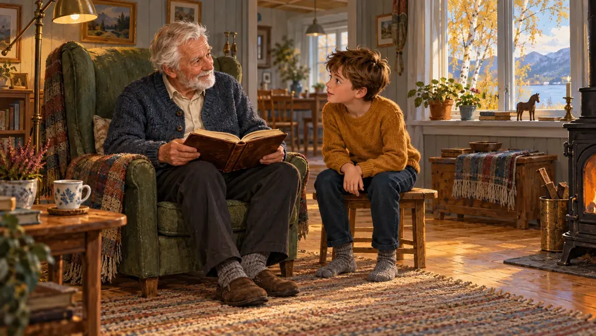
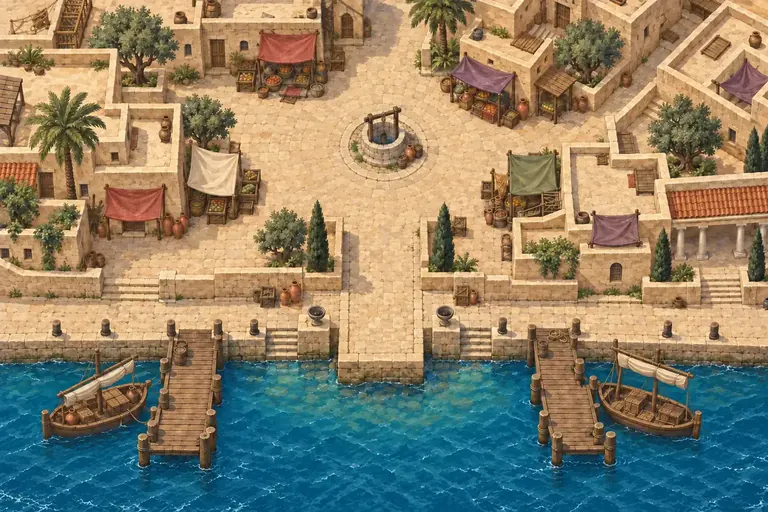

Prøv luke 1
Gratis
- Den første saken, på torget i Cæsarea
- Ingen konto, ingen e-post
Reisen med Lukas
Adventsspill · Evangeliet etter Lukas
Reisen med Lukas er et adventsspill der barnet blir medhjelper for Lukas og samler vitneutsagn om Jesus – én luke om dagen fra 1. desember til julaften.
Underveis øver barnet på å prøve en fortelling: Så de det selv? Sier flere det samme? Ble det fortalt tidlig? Passer det med alt det andre vi vet?

Hele familien kan være med: de minste peker og lytter, de eldre leser og resonnerer. Alle kort kan leses høyt i spillet.

Stemplene i vitneboka viser hvor mye støtte sporene gir, fra Troverdig til Omstridt. Barnet lærer at noe er bedre begrunnet enn annet, og at et spørsmål uten svar ikke betyr at noe er usant.
Gratis
[pris familie]
[pris menighet]
Etter kjøpet får dere en kode som låser opp hele reisen på enheten der den tastes inn. Lukene åpner på sin dag i desember, og etter julaften er alle åpne. [hvordan koden leveres] · [betalingsmåter] · Angrerett og refusjon: [vilkår] · Hva vi lagrer ved kjøp, står i personvernerklæringen.
Med en gruppelisens får hver familie sin egen kode, og barna spiller hjemme med familien, én luke om dagen. En kort lederveiledning har samtalespørsmål til alle 24 dagene og en melding dere kan sende foreldrene.
Gruppelisens: [pris menighet] for inntil [antall] familier. Ta kontakt: [kontakt]
Reisen med Lukas er laget av [avsender]. [Én eller to setninger om hvem dere er og hvorfor dere har laget spillet.]
«Ja, jeg stoler på det den forteller om Gud og Jesus.»
To aktivitetssider til hver dag: let etter ord, løs symbolkoder, finn forskjeller, tegn og undersøk små saker sammen. Opplysningene står på arket, og voksne får en egen fasit.
Se aktivitetsarkeneHovedoppdraget tar omtrent 5 minutter. Med de valgfrie sakene og småspillene tar en luke 10–15 minutter. Første og siste luke er litt lengre.
Spillet er laget for 8–12 år. Yngre barn kan være med sammen med en voksen eller et eldre søsken, og alle kort kan leses høyt.
Ja. Spillet kjører i nettleseren på telefon, nettbrett og PC, uten at noe må installeres. Større skjerm gir bedre plass til kart og kilder.
Første gang spillet åpnes, trenger dere nett. Etter det kan dere spille videre uten nett på samme enhet.
Framgangen lagres i nettleseren på enheten. Barn som deler enhet, deler derfor også framgangen – det fungerer fint når dere spiller sammen. Vil hvert barn ha sin egen reise, kan de bruke hver sin enhet. [hvor mange enheter én familiekode gjelder for]
Da er lukene fram til og med dagens dato åpne med en gang, og så åpner en ny luke hver dag fram til julaften. Kjøper dere for eksempel 10. desember, kan barnet spille luke 1–10 med en gang, og luke 11 åpner 11. desember. En åpnet luke blir stående åpen, så barnet kan ta igjen dagene når det passer.
Ja. Luke 1 er åpen for alle hele året. De andre lukene åpner én om dagen fra 2. desember: luke 2 den 2. desember, luke 3 den 3. og så videre til julaften. Hele reisen passer derfor fint som adventsgave.
Har dere kjøpt hele reisen, er alle 24 lukene åpne etter julaften. Dere kan ta igjen dager dere gikk glipp av, eller spille hele reisen på nytt i romjula og senere.
Luke 1 er gratis. Hele reisen koster [pris familie] for én husstand. Menigheter, søndagsskoler og skoler kan kjøpe gruppelisens til [pris menighet] for inntil [antall] familier. [Engangskjøp eller annen modell – bekreft.]
[vilkår for angrerett og refusjon]
Spillet er laget på kristent grunnlag og tar Bibelen på alvor. Samtidig øver det på noe alle har nytte av: å stille gode spørsmål og prøve det man hører. Alle er velkomne til å være med.
Noen kort i vitneboka viser til korte filmer fra BibleProject. Filmene er laget av og tilhører BibleProject. Alle sammen ligger gratis på siden Filmer fra BibleProject, dag for dag, også for dere som ikke har kjøpt hele reisen.
Nei. Det finnes ingen konto, ingen reklame og ingen analyseverktøy. Framgangen lagres bare på enheten. Les mer i personvernerklæringen.